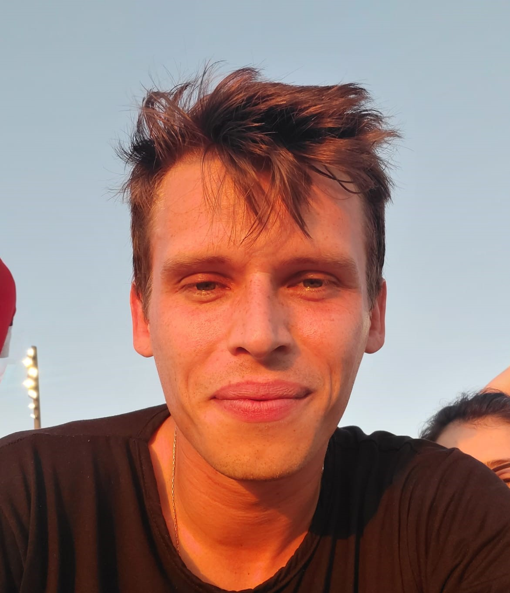

Oi, eu sou o Thiago Braz Donschat 😀
Rua Benjamin Constant, 229 Novo Hamburgo - RS
SOBRE MIM:
Me considero uma pessoa divertida, bem humorada e estou sempre disposto a aprender coisas novas. Adoro futebol, tanto assistir quanto jogar. Quando não estou trabalhando ou estudando, além do futebol, gosto de estar por dentro dos jogos digitais. Procuro fazer uma divisão balanceada do meu tempo, entre o profissional, social e pessoal.